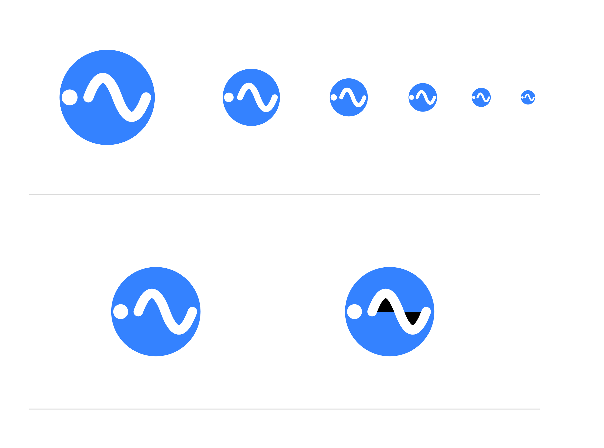

圆形（安全区基准）
r = 33dp
元素只有两个：实心圆点 cx=28 cy=54 r=5.5，平滑正弦两拍
M41,54 Q51,27 61,54 T81,54 笔宽 7 圆头
· 画布 108×108dp

上排是 160 / 96 / 64 / 48 / 32 / 24 六种尺寸，
下排左是修复后的图标，右是修掉之前的旧写法（波形没写 fillColor）。
右边那张能看到波峰下方一块黑色楔形、波谷处一条横向黑带， 黑色约占波形区域的 1/4 ~ 1/3。这就是原图标里一直被白色描边盖住、 没被察觉的黑色填充 —— 也是这张对比图能画出来的前提。
drawable/ic_launcher_foreground.xml — 圆点 + 平滑正弦两拍，两个元素。笔宽 7、圆头圆角。波形用 Q/T 画平滑曲线，不是折线VectorDrawable 的 <path> 不写 fillColor 时默认取 Paint 缺省的黑色，原图标只写了 strokeColor，折线下方一直压着一层黑色填充。新波形显式写 #00000000values/ic_launcher_background.xml — #3482FF，单一纯色，这是 Android 12+ 莫奈重染的前提mipmap-anydpi-v26/ic_launcher.xml — 保留 <monochrome> 层，Android 13+ 主题化图标靠它生效